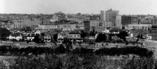
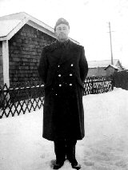
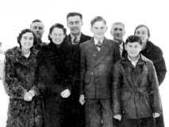
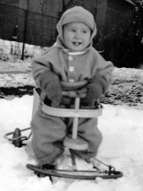
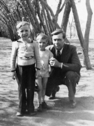
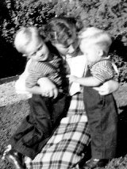
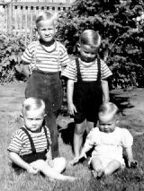
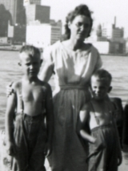
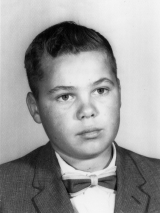

Saskatoon
Saskatchewan

Saskatoon, a commercial and educational centre in the province of Saskatchewan, is situated on the banks of the South Saskatchewan River.
Read more...
|
Percy Scott Exley & Lillie Pearl Anderson

Percy & Lillie Exley
Wedding Day - 1942
|
Percy Scott Exley met Lillie Pearl Anderson at the Apostolic Church in Saskatoon on Sunday February 1, 1942.
They had a whirlwind romance which resulted in their marriage one month later on Sunday, March 1, 1942 at the
Apostolic Church. Both Percy and Lillie had had unhappy recent love affairs and married on the rebound.
For the first six months of their marriage, Percy continued to work at his father’s fish and chip shop. During
this period, Lillie had her first attack of mental illness following a miscarriage, at which time she had visual
hallucinations. On July 29, 1942, Percy joined the Canadian Army with recruitment in Regina, Saskatchewan. The
young couple had been living in downtown Saskatoon, but when Percy joined the army, Lillie moved to live with her
mother. During the next 28 months, Percy and Lillie were only able to get together on occasion when Percy could
arrange for leave.

Percy Scott Exley
Saskatoon c1942
|

Anderson Family
Saskatoon c1942
|
On October 12, Percy completed eight weeks of basic army training at Maple Creek, Saskatchewan. He was immediately
assigned to a five month posting to Camp Shilo in Manitoba. During this period, Percy was admitted to the hospital
on several occasions.
On May 7, 1943 he was transferred to the Edmonton Fusiliers at Vancouver Island, BC where he spent 5 months at various
locations. For the period August 25 to September 13, 1943, Percy was granted 14 days furlough leave to attend the birth
of his first son Perry Leroy.
During the next two years, Percy was transferred to several locations including Sussex, NB, Niagara Falls, ON and Camp
Derbert, NS. Lillie and Perry joined him at Niagara Falls on November 11, 1944. Lillie and Perry followed him to Nova
Scotia, relocating to Truro on May 24, 1945. Percy and Lillie’s second son, Howard Clarence, was born July 24, 1945
in Truro, NS.
Percy was transferred to Camp Maple Creek on November 30, 1945. Lillie and their two boys return to Saskatoon to live
with Lillie’s mother. Percy was then transferred to Camp Dundurn on December 14, 1945 to await his discharge from the
army. Percy was finally discharged from Army on February 6, 1946. He was considered to be a fully trained infantry
soldier, employed on training, guard duty, and fatigues throughout his service.
Percy Scott Exley
Shilo, Manitoba 1943
|
Lillie & Perry Exley
Saskatoon 1943
Perry Age 3 Months
|
Why was it that he never went overseas while in the Army for 42 months? After all, he was a fully trained infantryman.
I’m sure that they could have used a soldier overseas without a trigger finger. It is probably a coincidence that Percy
was missing his index finger after working as a butcher for several years. Or perhaps it had nothing to do with his
missing finger. The medical officer gives us a clue when he states “Deafness and chronic discharge right ear. Fit for
heavy labour.” So maybe his frequent hospital stays while in the Army had something to do with his chronic discharge
from the right ear.
On Percy’s exit interview document, they state, “Exley is of average height, stocky in build, very strong in appearance
and 38 years old. During interview his attitude was one of indifference. He wishes to find employment in a butcher
shop since he has had a considerable amount of civilian experience in that work and likes it. In view of the experience
mentioned, his strong physique and liking for the work, it is considered that he could be suitably employed as a butcher’s
helper. In addition, in view of his civilian experience in truck driving and his strong physique, he could also seek
employment as a truck driver. In view of this man’s occupational background, his educational level and his physique,
he could also seek employment as a labourer with a road or building contractor.” Percy had one Campaign Medal,
the War Medal 39-45 which was dispatched to him June 20, 1966.
Perry Exley
Saskatoon 1944
Age 6 Months
|
|

Perry Exley
Saskatoon 1944
Age 15 Months
|
|
Perry Exley
1945 - Age 18 Months
|
|
Murray Exley
Age 4 or 5 months
|
|
On his discharge from the Army, Percy retuned to Saskatoon and eventually found a job with the Federated Cooperative driving
a truck. On July 28, 1946, Percy and Lillie’s third son, Murray Leonard was born in Saskatoon. In the fall of 1946, Percy
and family went to Hibbing, Minnesota to visit friends. While in Hibbing, Percy was baptised on November 17, 1946 at the Open
Door Pentecost Church. The Exley family spent the rest of the winter in Port Arthur, Ontario and returned to Saskatoon in the
spring of 1947.
Percy with Howard & Perry
Hibbing MN - Fall 1946
|
|
Kilburn Hall - Front View
|
|
|
When they returned to Saskatoon, Percy and Lillie were having problems looking after their three sons; Perry was 3½ years old,
Howard was 21 months old and Murray was only 9 months old. In addition, Lillie was about 3 months pregnant. As a result, the
care of Perry and Howard was taken over by the Children’s Aid Society (CAS) of Saskatoon in May of 1947 on an intermittent basis,
but Murray remained with his parents. At that time, Perry and Howard were placed at Kilburn Hall, an orphanage in Saskatoon
which was run by the CAS. Perry can still remember the day they were taken to Kilburn hall, and the feelings of abandonment,
uncertainty and hopelessness. Lillie would rely on an arrangement where the CAS would immediately place her children in an
institution at intervals. This occurred five or six times. Up until December 1953, a period of more than six and a half years,
Perry and Howard were bounced around between Kilburn Hall, foster homes and living with their parents. The CAS had Perry and
Howard first on a non-ward basis, and later, when conditions continued to deteriorate, on a ward ship basis. During that early
period with the CAS, David Laurence, Percy and Lillie’s youngest son was born on October 16, 1947.
During the period between May 1947 and David’s birth, Percy and Lillie requested that their unborn baby be taken into care
for adoption. Lillie was unable to cope with her children because of her poor mental health. Lillie and Percy had had many
disagreements at times; Lillie’s mental health problems were a contributing factor towards their differences. Because of her
mental health problems, Percy and Lillie felt that most certainly their newborn baby should go directly into an adoptive home.
Lillie had always felt unsettled in her marital situation. The Exley family had moved several times and on occasion Lillie
had been separated from her husband. Lillie had a history of instability and difficulty. She could not seem to stand the
pressure of bringing up her children.
Anna & Jake Enns
Saskatoon - c1947
|
|
Howard & Perry
Exley - Spring 1947
|
|
|
|
|

Perry Exley
Summer 1947
|
|
|
Perry & Howard Exley
Summer 1947
|
|
|
In January 1948, Murray was placed in a foster home in Saskatoon where he had made excellent progress with two older children
in the home and so received much attention. In the spring of 1948, when David was about six months of age, he was placed in
a foster home as well.
On June 5, 1948, Lillie was admitted to the Saskatchewan Mental Hospital in North Battleford. She was admitted to the hospital
after two weeks observation in the City Hospital in Saskatoon, with a history of having always been nervous and inclined to
worry, of having absorption with religious readings and having a conduct of increasing inability to assume responsibility
for her home and children. This responsibility she avoided by leaving home. When in hospital, she was pleasant and agreeable
and quite co-operative, but quite seclusive. Her emotional response was inadequate and inappropriate and she spent much time
reading her Bible and admitted to hallucinations of hearing. The diagnosis of Schizophrenia #18, Hebephrenic type was made and
the prognosis was thought to be not good. Lillie worked in the laundry at times. She received ECT (electroconvulsive treatments)
but these were discontinued after two treatments because of a physical illness which she developed. She was also involved in group
psychotherapy. On July 25, 1948 she was discharged to the care of her husband after 51 days at the hospital. Her condition on
release was improved, but with poor prognosis. When she came back from the hospital, Perry and Howard returned home for a short
period, but Lillie was not able to cope.
|
Howard & Perry Exley
Summer 1948
|
|

Perry, Howard & Percy
Summer 1948
|
|
Perry, Lillie & Howard
Summer 1948
|
|
|
In the fall of 1948, while visiting family, Lillie was admitted to Essondale, a mental hospital in the Vancouver area. She received
ECT and psychotherapy counselling. She was released from Essondale just after Christmas, and stayed with her niece Alice Thorne until
Lillie returned to Saskatoon near the end of February 1949.
By November 1948, David was in the hospital looking very neglected and malnourished; he had developed stomach problems and had rickets.
From all reports, it seemed that Lillie did not want David and rejected him from the beginning and so was indifferent to his needs.
It appears that Lillie did experience a post-partum depression/psychosis at the time of David’s birth. At age 13 months, CAS decided
to ask Jake and Anna Enns whether they would be willing to nurse him back to health; otherwise he would need an operation. They had
a diet sheet which Anna was to follow. The Enns’ immediately said yes.
Jake and Anna didn’t have any children of their own, and as a result they had previously adopted a daughter, Ramona (Mona) who was then
14 years of age. In 1946, Jake and Anna had applied to take a foster child, so they were on CAS’s list of foster parents, even though
they hadn’t really had any lasting placements.
On the day David arrived at the Enns home, Mona came home from school to discover she had a little brother. Her mother immediately
asked Mona to go to the store for baby bottles and nipples. Anna put David on the bottle and supplemented it with table food
disregarding the diet sheet. Within a month, David had recovered his health. When David arrived at the Enns home, he was very
small for his age; he looked like he was only six months old, even though he was thirteen months old.
On March 26, 1949, Lillie was again admitted to the North Battleford hospital, this time for a longer period. She came to the
hospital following a quarrel with her husband during which she had broken all the windows in her house. She was markedly
depressed and had cut her hand in the window. It was stated that she was unable to care for her children and had no interest
in her home or husband. It was difficult to engage her in conversation and she was inappropriately enthusiastic regarding
religion and talked at great lengths in a delusional manner. The date of her onset of the present illness was given as 1947
at the time she had David. On admission to the hospital, she appeared to have good insight describing clearly her feeling
of loneliness and depression with everything being too much for her. She told hospital staff at this time that her children
were not with their father but were in the care of “some organization”, which hospital staff presumed that her children we
were likely in foster homes. On August 27, 1949 she was discharged to the care of her husband after 155 days at the hospital.
Her condition on release was again improved, but with poor prognosis.
In the spring of 1949, the Enns’ became aware that David had an older brother who was also in a foster home. Since the Enns’
believed that brothers should be together, Jake suggested that both boys should be in the same foster home, not separate homes.
Murray’s foster parents brought him over to the Enns’ home to discuss the situation, but when they discovered David’s age, they
said they didn’t want a younger child, so Murray should be with David at the Enns’ home. Soon after, in April 1949, CAS placed
Murray at the Enns’ home. CAS considered the Enns home to be exceptionally good. Murray received much attention and excellent
physical care, however with his younger brother David already in the home, CAS believed that Murray regressed in his behaviour.
The competition with David was responsible likely for Murray’s regressive and then later, demanding and jealous behaviour.
It was noted that Lillie had very hostile feelings towards Murray as she felt he was a precipitating factor in her mental breakdowns.
She was extremely unhappy to learn about her pregnancy with him. Murray had always been rejected by not only Lillie, but CAS also
thought by the Enns’ in spite of their warm, loving atmosphere.
|
|

Mona, David & Murray
June 1949
|
|
Howard & Murray Exley
August 1949
|
|

Murray Exley
August 1949
|
|

Four Exley Brothers
August 1949
|
|
Percy & Four Brothers
August 1949
|
|
Murray, Howard & Perry
February 1950
|
|
Howard, Perry & Murray
February 1950
|
|
In the summer of 1949, CAS approached the Enns’ to find out if they would like to look after David and Murray’s two older brothers.
Since the Enns’ believed that brothers should be together, they immediately said that Perry and Howard were welcome, as long as the
CAS didn’t mind if all four boys sleep in the same bedroom. Since Perry was turning six years of age, he started grade one at North
Park School that September. Perry and Howard spent the next nearly two and half years living at the Enns’ home, with their two brothers.
Soon after Perry and Howard arrived, their parents moved to a house across the alley from the Enns’ home. There were a few times during
that period when Lillie wanted her children to stay with her. For Christmas day 1950, all four boys spent the day with them. During the
summer of 1951, Perry and Howard spent a week with their parents. Not only did Jake and Anna Enns look after their children, they also
offered a great deal of support, sympathy and understanding to their parents. Although their parents may have intruded on the privacy
of the Enns family, Jake and Anna never complained but rather seemed to try to understand the problems their family was having.
On June 9, 1950, Lillie was admitted to the North Battleford hospital for the third time. When Percy went to North Battleford to visit
Lillie, during the course of the visit, she left without permission and returned home. Hospital staff were concerned that she was not
well and notified the RCMP to return her to the hospital. They felt that Lillie’s condition had remained unchanged and had advised Percy
that she should have an operation called a prefrontal lobotomy, however Percy refused to give his consent to this. At this time, the CAS
started to consider permanent wardship or at least temporary wardship in order to serve the best interests of the four brothers. On December
18, 1950 Lillie was discharged to the care of her husband after 193 days at the hospital. Her condition on release was again improved,
but with poor prognosis.
|
|
Murray & Howard Exley
February 1951
|
|
Howard, Lillie & Perry
March 1951
|
|
|
On May 22, 1952, Lillie was admitted to the North Battleford hospital for the last time. Lillie’s diagnosis on this fourth admission
was “Immature Personality #321.5”. The records indicate that they “did not expect Lillie to recover sufficiently to be able to care for
her children, as they felt that she would not be capable of assuming responsibility inherent to the position of housewife and mother and
that she is not well enough to care for the children and ward action would seem to be indicated. Her treatment was psychotherapy and
environmental manipulation. A prefrontal leucotomy had been recommended, but never performed. Her prognosis regarding departure from
the hospital was good, but her continued adjustment in the community without further hospitalization was guarded.” She was discharged
to the care of her husband on July 7, 1952 after 47 days at the hospital.
At times during this period, Lillie was quite rational and seemed quite capable of managing her home and planning for the children,
while at other times she was quite depressed, which necessitated her being admitted to the hospital.
When Lillie was in hospital, Percy never did assume responsibility for his children, as during those periods the children were either
in foster homes or Kilburn Hall. Perry and Howard had been placed in foster care on various occasions - whenever Lillie would ask, Perry
and Howard would be placed almost immediately. The CAS had felt that Perry and Howard should have been made permanent wards, but Percy
and Lillie would not consent to this, and the court was reluctant to grant them permanent wardship.
As a result of this move, the later part of Perry’s grade three at Wilson School was disrupted and he had to repeat grade three the next
year. Perry and Howard had poor school progress at this time because of their home situation.
The four brothers were apprehended on January 5, 1952 by CAS. Percy and Lillie attended a family court hearing on January 11, 1952.
As a result, an Order of Committal was issued for the permanent commitment of Murray and David to the Minister of Social Welfare and
Rehabilitation. The City of Saskatoon was ordered to pay $3.50 per week in respect to the expense of supporting the two children.
Percy was to pay Minister of Social Welfare $15.00 a month for each of his children until such time as either they came home again
or were adopted.
| Court Case Record - January 11, 1952 |
Consent forms were completed and signed by Percy and Lillie by January 21, 1952 consenting
to the adoption of David and presumably Murray.
|
|
|
Howard & Perry Exley
Summer 1952
|
|

Perry, Lillie & Howard
Summer 1952
|
|
Perry and Howard were committed to the Minister of Social Services for a period of one year and moved to
Kilburn Hall. This would be the last time that the four boys would be allowed to be together. Did the CAS
even give the four brothers the opportunity to say goodbye to each other? They certainly didn’t allow Perry
and Howard to say goodbye to Mona.
Because they did not really know their parents, Murray and David were committed to the Minister permanently
and remained at the Enns home awaiting placement for adoption. In May 1952 at the time of the transfer from
CAS, Mrs’ Enns understood that adoption placements would be considered for Murray and David. Jake and Anna
Enns expressed great interest in adopting both Murray and David, stating they had not had a good start and
they had been with them for so long that they had grown to love them as their own.
As soon as Jake and Anna became aware of the planned adoptions, they applied to adopt both Murray and David.
CAS had a policy that foster parents could not adopt their foster children if the biological parents knew the
foster parents. This policy presumably was to protect the foster/adoptive parents from interference by the
biological parents. As a result, the CAS said absolutely not. Jake protested that Murray and David had never
known any other home, so CAS should make an exception in this case. CAS wondered what part of “No” the Enns’
family didn’t understand. They said no again, but Jake would not take no for an answer. So Jake wrote to
Tommy Douglas, the Premier of Saskatchewan (and more recently voted the Greatest Canadian), explaining the
circumstances and asking him to intervene.
Perry & Howard
Summer 1952
|
|
Lillie, Howard & Perry
Summer 1953
|
|
Perry & Howard Exley
March 1954
|
|
Howard, Percy & Perry
Fall 1958
|
|
|
As a result, the CAS changed their mind and approved the adoption of David by the Enns family, but insisted that
Murray would still be adopted by another family. Because of the emotional deprivation that Murray had experienced,
it was felt by CAS that he needed to go to an adoptive home where he would be the only child. When they were asked
by Jake and Anna why they couldn’t also adopt Murray, the CAS indicated that Murray had never been the baby in a
family. There was also an indication that the Enns family income was not adequate to support two young children.
CAS offered to allow Jake and Anna to meet Murray’s adoptive parents, but they declined because Jake didn’t want to
know who they were. Jake was afraid of what he would do if he ever learned that this family had mistreated Murray.
The social worker felt that Murray needed to receive some treatment before attempting the adoption placement. As a
result, CAS removed Murray from the Enns home on August 18, 1952 taking him to Kilburn Hall, and again Murray did not
have the opportunity to express his goodbyes to Mona and probably not to David either. Murray eventually was placed
with his adoptive parents, Johan Keller and Sigga Maria Motzfeldt on November 9, 1952. His name was changed to John
Murray Motzfeldt. The Motzfeldt family lived in Regina from 1950 until 1958. Johan Motzfeldt worked for Simpson’s
as a department manager.
Murray’s adoption summary described Percy as working as a truck driver and was described as being a very slow-moving,
slow-speaking person. He impressed the worker as having somewhat limited intelligence but was very industrious and
hard-working. At this time, he was said to be in good physical health. He was described as being slightly below
average height, heavily set with dark brown hair, a sandy complexion and blue eyes with even features. His health
was good although he did complain of frequent headaches and was deaf in one year.
Murray’s adoption summary described Lillie as a very slight, small woman with medium brown hair, slight olive
complexion, light brown hazel eyes and very nice features. When she was in good health, she was very easy to
talk to; she had good insight; she was very outgoing and friendly. Although her face was lined and drawn with
care and worry; it was noted that she had likely been a very attractive-looking person when she was younger.
She was usually rather poorly dressed but always neat. When not in good health, her grooming suffered markedly
and her manner changed as she became quite belligerent, unhappy, withdrawn and secretive. At such times, she
talked loudly against almost any subject that came up and sometimes remained silent and defensive. She had
always been a deeply religious person.
David spent his first year at school in kindergarten as David Exley. Although his formal adoption wasn’t finalized
until February 17, 1956 his name was changed to David Enns when he entered grade one in 1953.
Before temporary wardship was to expire in January 1954, the CAS returned Perry and Howard to their father’s care
in December 1953 and their adjustment at home and in school appeared fairly satisfactory. At the time that they
were returned home, Lillie was visiting her sister in Vancouver. Shortly afterwards, she returned home and appeared,
most of the time, to be fairly well. While Perry and Howard were in temporary care, their parents kept contact with
the CAS and with them fairly regularly. The CAS had considered permanent wardship on more than one occasion, but
Perry and Howard were older, and as there was a fairly strong attachment between them and their parents, they cared
for the boys on a temporary basis.
When Lillie returned from Vancouver, she convinced Percy that the family should move to Vancouver to make a new start.
So around Easter time in 1954, their bags were packed, and the four of them drove themselves to Vancouver. At this
time, Percy and Lillie didn’t have any knowledge of their two youngest sons. Likewise, Jake and Anna Enns didn’t have
any information on what had happened to Perry and Howard. And neither the Exley family nor the Enns family had any
idea what had become of Murray.
After arriving in Vancouver, the Exley family continued to have difficulties. By August of 1954, Lillie was asking
the Vancouver Children’s Aid Society for help. By December of 1954, Perry and Howard were placed at a foster home by
their parents. In February 1955, the Juvenile and Family Court decided that Perry and Howard were in need of protection
and made them wards of the CAS. During the next 10 years, Perry and Howard were in foster care in the lower British
Columbia mainland area. During that period, they were able to visit with our parents from time to time.
|
|
|

David Enns Grade 8
June 1960
|
|
Even without their kids at home, Percy and Lillie’s married life together continued to be troublesome. On one of the
visits he had with his father in the summer of 1959, Perry was asked what he thought about his mother leaving his father
for another man. He didn’t have an answer, since his parents had never been important in his life.
Lillie had met Edwin "Ted" Cooper, a married man with five kids, probably at Church. They found that they seemed to
have a lot in common. Besides their common religious beliefs, both Lillie and Ted were hyper, expressive and creative.
As well, both Lillie and Ted had been treated for mental illness. Both of them continued to suffer from mental illness.
They fell in love with each other, and in August 1959 they decided to run away together, heading east to Calgary. During
the period they lived together in Calgary, Lillie became pregnant by her common-law husband. She believed that the fact
that God had allowed her to become pregnant indicated his acceptance of her extra marital affair and that it was not sinful.
|
Edwin & Timothy
Cooper - Early 1961
|
|
Lillie & Timothy
Cooper - Early 1961
|
|
Percy with the
Wilsons - c1961
|
|
Lillie returned to Vancouver in early June 1960. She visited Percy and asked for a divorce, but Percy was not agreeable
to this and forced her to admit herself as a voluntary patient to Crease Clinic of Psychological Medicine on June 11, 1960.
At the clinic, she expressed a moderate hostility against her legal husband and admitted that she had been thinking of
suicide, but not in a serious way. Her mental state on admission was characterized by a certain amount of anxiety, her
narrative was coherent elaborating on her relationship with her legal husband and her meeting with another man who also
left his family and has been treated as a mentally ill person in the past. Her religious beliefs seemed to be on the
border of delusional pre-occupations. The striking feature in her condition was the lack of proper judgment since she
was unable to recognize the awkward situation she had brought on herself by leaving her legal husband, living in a
common-law relationship with another man and becoming pregnant at age 44 out of wedlock. Lillie was discharged from
the clinic on June 25, 1960, with no medication, in slightly improved condition. She was diagnosed as Schizophrenic
Reaction – Chronic Undifferentiated (Residual).
|
|
Percy with Celia Flowers
Summer 1965
|
|
After this, Lillie’s common-law husband returned to Vancouver, and they began to live together again. On November 23,
1960, Lillie’s fifth son was born. They named him Timothy Lorne Cooper. Even though she considered her baby to be
their love child, Lillie and Ted had difficulties during the early months of Timothy’s life. In addition to the parents’
temperament, Ted was jealous of the attention that Timothy was getting, so he didn’t make it easy for Lillie to care for
Timothy. By the summer of 1961, the situation had become unbearable, so Lillie approached the Children’s Aid Society for
help once again. As a result, Timothy was apprehended and eventually placed for adoption.
|
|
|

Lillie Cooper &
Myrle Thorne - c1966
|
|
|
In 1962, Percy decided that it was finally time for a divorce, and once that was completed, Lillie was finally free
to marry Ted, which she did on June 26, 1964 in Vancouver, British Columbia. Edwin Cooper was born at Blackburn,
Lancashire, England on October 28, 1911. His parents were Richard and Janet (Nixon) Cooper. Edwin immigrated to
Canada arriving in Montreal August 24, 1929 from Liverpool on the SS Laurentic.
Just over nine years after leaving Saskatchewan, on July 27, 1963 Perry asked his CAS worker if he thought he would
ever be able to contact his two younger brothers who were adopted. Since he knew their birthdays, he told the worker
that Murray would be seventeen the next day. The worker informed him that he thought the boys had been happily placed
and they were very mature. There wouldn’t be any question of why he should not see them, as they would probably be
very interested in seeing what he was like, but so much depended on how well they were adjusted to their adopting
parents, and how well they were doing in school, or in business, or whatever they may be at. The worker said he
thought perhaps when they were 21 they too would perhaps wonder what had happened to Perry and Howard, and it might
be nice in the future if we did get together.
|
|
Lillie & Ted Cooper
with grandson Darren Exley
1984
|
|
Lillie & Mabel Exley
with grandsons Darren
& Shaun Exley - 1986
|
|
Within nine months, Perry did have the opportunity to meet David in Saskatoon. The worker had been totally right
about David’s adoption. David and Perry have been good friends since the spring of 1964. In February 1965, Howard
returned to Saskatoon, where he had the opportunity to meet David as well. Mrs. Enns, David’s mother, invited Howard
to live with her and David (Jake Enns had previously passed away from a brain tumour). Howard accepted her offer and
lived with the Enns’ for over five years, during which time he completed his grade 12 and his University degree with
honours. Whenever the Exley brothers needed help, the Enns family was there with a helping hand. For nearly 22 years,
the Enns family helped one or more of the Exley brothers, and given the opportunity by the CAS, they would have helped
even more.
Lillie Cooper &
Perry Exley - 1996
|
On December 19, 1970, Percy Scott Exley died at age 63 at the New Westminster Hospital in British Columbia. The cause
of death was acute myocardial infarction, commonly known as a heart attack. He was cremated on December 24, 1970 by
North Shore Crematorium. His remains were handled by First Memorial Services of North Vancouver, BC.
After their marriage, Lillie and Edwin lived together in the Vancouver area, and eventually moved to Napier Lodge,
a nursing home in Vancouver. While living there, Edwin Cooper died on April 20, 1991 at age 79. He was cremated by
North Shore Crematorium. His remains were handled by First Memorial Services of North Vancouver, BC.
After Edwin’s death, Lillie’s health deteriorated, and eventually she was moved to another nursing home, Fellburne
Hospital in Burnaby, BC. While living here, Lillie’s dementia progressed from memory loss to a complete inability
to communicate. On December 31, 1996, Lillie Pearl Cooper died in Burnaby, British Columbia. The cause of death
was respiratory failure and pneumonia. An autopsy concluded that she suffered from Alzheimer’s disease. Lillie
was cremated by West Coast Crematorium in Burnaby, BC. Her remains were handled by First Memorial Funeral Services
of North Vancouver, BC.
P.S. – In recent years, an effort was made to locate Murray and Timothy who had been adopted as children.
An application was made to the Adoption Reunion Registry in Victoria, BC for an active search for Timothy
in November 2003. By May 2004, Perry and Timothy were exchanging emails through Victoria. By July 2004,
names were exchanged and they were able to talk to each other on the telephone. Later that month, Perry
and Glen finally met at Glen’s parents’ home in Richmond, BC. A year later, all four brothers and their
families met at a reunion in Richmond, BC.
In March 2004, the Post Adoption Agency in Regina was contacted to request assistance in locating Murray.
An active search for Murray was soon initiated. Their file contained two letters from Murray, one from
1976 and the last from December 1992. At the time of his last correspondence, Murray was living in
Ottawa, but had moved after that. The initial search for Murray while comprehensive was not successful.
After the Brother’s Reunion in 2005, the Post Adoption Agency was once again asked to have another look
for Murray. Once again, they had not been able to locate him directly, but had attempted to have letters
forwarded to him, requesting him to contact their office. Murray did not contact their office, and it was
not known whether Murray had received the one letter that they had been informed had been forwarded to him.
So in January 2009, the Post Adoption agency closed their search file. In August 2009, Murray’s whereabouts
was located in the Ottawa area. Contact was made with him in November 2009, and finally in January 2010,
Perry was able to meet his brother after nearly 58 years.
|